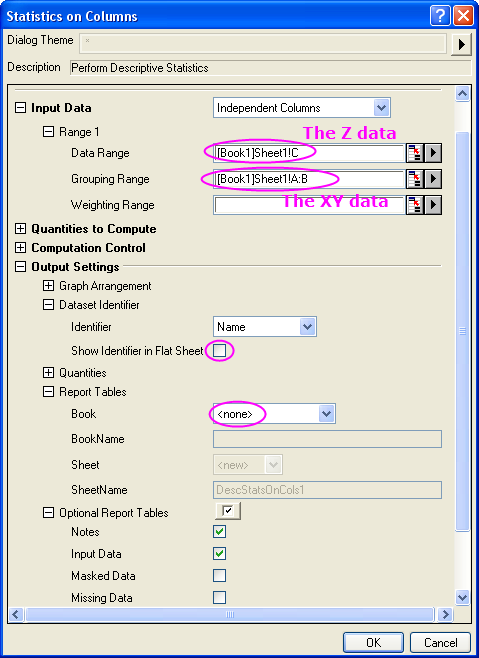

FAQ-504 Wie reduziere ich einen XY- oder XYZ-Datensatz?
Letztes Update: 04.02.2015
Reduce-XY-XYZ-Dataset
Wenn Sie duplizierte X-Daten in einem XY-Datensatz reduzieren möchten, markieren Sie die Y-Spalte und wählen Sie Analyse: Datenbearbeitung: Duplizierte X-Daten reduzieren. Dieser Dialog basiert auf der X-Funktion reducedup.
Wenn Sie die duplizierten XY-Daten aus einem XYZ-Datensatz entfernen möchten, können Sie das Hilfsmittel Spaltenstatistik verwenden und die unten aufgeführten Schritte befolgen:
- Markieren Sie die Z-Spalte und wählen Sie Statistik: Deskriptive Statistik: Spaltenstatistik. Diese Spalte wird als Datenbereich verwendet.
- Wählen Sie die X- und Y-Spalten und legen Sie und legen Sie sie als Bereichsgruppierung fest.
- Wählen Sie im Zweig Zu berechnende Eigenschaften den Unterzweig Quantile und die Eigenschaften, mit denen Sie die duplizierten Werte ersetzen möchten (z.B., Minimum, Median, Maximum).
- Wenn Sie auch die Anzahl der ersetzten duplizierten XY-Werte ausgeben möchten, aktivieren Sie die Option N gesamt im Unterzweig Momente.
- Erweitern Sie im Zweig Ausgabeeinstellungen den Unterzweig Datensatzidentifizierer, deaktivieren Sie das Kontrollkästchen Identifizierer in Ergebnisblatt; wählen Sie im Zweig Berichtstabellen die Option Keine in der Auswahlliste Mappe.
- 
- Klicken Sie auf OK, um die Statistik durchzuführen. Im Berichtsblatt wird der XYZ-Datensatz um die duplizierten XY-Werte reduziert.
| Hinweise: Durch Verwendung der zweiten Annäherung mit der Spaltenstatistik können Sie auf ähnliche Weise auch duplizierte XY-Daten um XYY-Daten reduzieren. |
Schlüsselwörter: Datenreduktion, Duplikate entfernen, duplizierte Zeilen, Datenbearbeitung, geschachtelte Spalten, Spaltenstatistik, X reduzieren, X und Y reduzieren